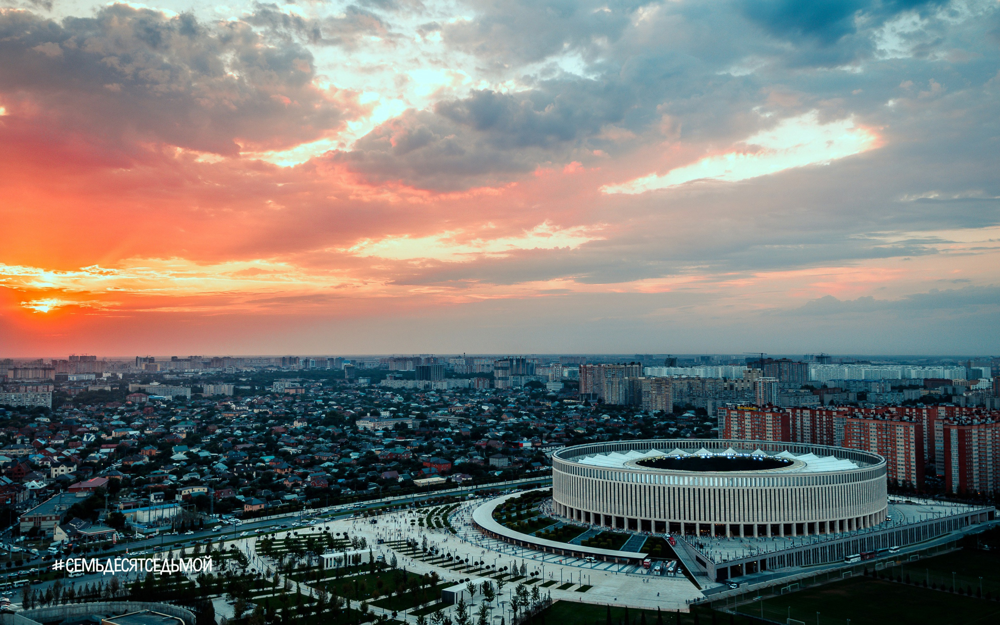
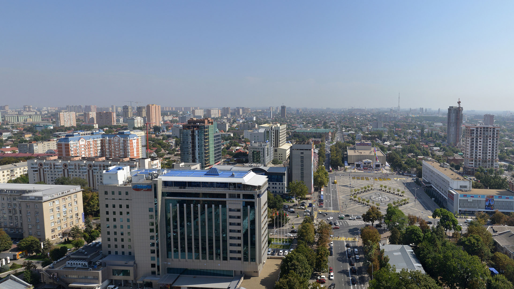
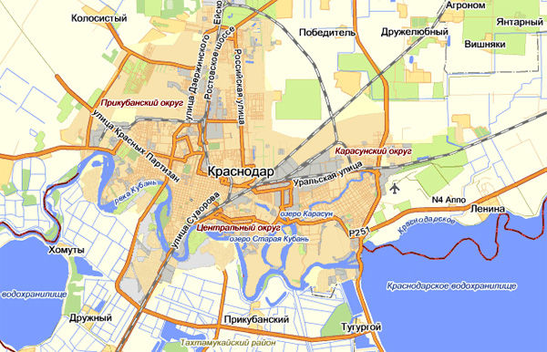

Краснодар

Краснода́р — город на юге России, расположенный на правом берегу реки Кубани, на расстоянии 120 км от Чёрного моря (по автодороге от пос. Джубга), 140 километров от Азовского моря (по автодороге от станицы Голубицкой) и 1300 км к югу от Москвы (по автодороге М-4 «Дон»). Административный центр Краснодарского края. Вместе с прилегающими сельскими населёнными пунктами образует муниципальное образование город Краснодар со статусом городского округа.

Крупный экономический и культурный центр Северного Кавказа и Южного федерального округа, центр историко-географической области Кубань. Неофициально именуется столицей Кубани, а также столицей Юга России. Население города — 932 629 жителей (на 2020 год). Население городского округа «Муниципальное образование город Краснодар» — 1 022 028 жителей (на 2020 год).

Краснодар находится в южной части Восточно-Европейской равнины на Кубано-Приазовская низменности, в 1300 км к югу от Москвы. Расположен практически в центре Краснодарского края, в южной части Прикубанской равнины, в долине реки Кубани (на правом, высоком берегу), то есть, геоморфологически, на пойме и надпойменной террасе.